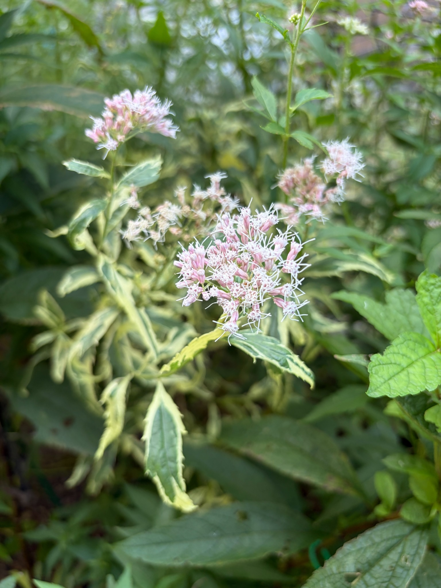

2026/10/11 淡いピンク色の花が開き、斑入りの葉の上にやわらかく広がっています
10月11日のピンクフロストは、枝先についた淡いピンク色の花が開き、白い糸状の部分が外へ広がっています。花房の中にはまだ閉じた蕾も残っていますが、手前の花房では、開いた小さな花の形がよく分かるようになっています。
9月23日は、いくつもの枝先に花房がつき、丸みのある蕾と開き始めた花が混在していました。それから18日がたち、今回は白い糸状の部分を伸ばした花が目に入ります。ピンク色の蕾のまとまりを眺めていた頃から、開いた花の細かな姿を楽しめる段階へ進んできたように感じます。
ただ、すべての花房が同じ状態ではありません。淡いピンク色がきれいに残る花房もあれば、一部がくすんだ色に見える花房もあります。これから開く蕾と、今咲いている花、咲き進んだように見える部分が重なり、枝先ごとに違う表情を見せています。

手前の花房では、小さな花の形がよく分かります
手前の花房には、細長いピンク色の部分がいくつも集まっています。その先端が開き、白からごく淡いピンク色に見える細い糸状の部分が伸びています。
閉じた蕾は先端がまとまり、輪郭がすっきりしています。一方、開いた花では、先端の小さな裂け目や外へ伸びた糸状の部分が見え、ひとつひとつの形が複雑になっています。近くで見ると、淡いピンク色だけでできた花房ではなく、ピンク色と白色が細かく重なった姿です。
白い糸状の部分は、上へ伸びるものや横へ張り出すものがあり、花房の外側まで広がっています。蕾だけの状態に比べると輪郭に動きが出て、ふんわりとした印象になっています。
花房の中心付近にも外側にも開いた花があり、その間にまだ先端の閉じた蕾が残っています。花房全体が一度に開くのではなく、小さな花ごとに少しずつ咲き進んでいる様子がうかがえます。
ピンク色が残るため、白い糸状の花との重なりが楽しめます
開花した部分にも、細長いピンク色の部分がはっきり残っています。その先から白い糸状の部分が伸びているため、花が開いても花房全体が真っ白になるわけではありません。
少し離れると淡いピンク色のまとまりに見えますが、近くでは白い細い線があちこちへ伸びています。この色と形の重なりが、ピンクフロストのやわらかな花姿につながっているように感じます。
左上の花房にも、ピンク色の蕾と白く開いた部分が並んでいます。手前の花房とは向きや見え方が異なりますが、こちらでも蕾だけの状態を過ぎ、開花した姿を楽しめるようになっています。
奥側にも淡い色の花房が見え、ひとつの枝先だけでなく、複数の場所で花が咲いています。花房ごとに大きさや咲き具合が違うため、目を移すたびに少しずつ異なる姿が見られます。
開いた花の間には、まだ蕾も残っています
手前の花房には、先端が閉じたピンク色の蕾がいくつも残っています。開いた花のすぐ隣にも蕾があり、ひとつの花房の中に開花前と開花中の姿が同時に見られます。
蕾は、9月23日に記録した丸みのあるまとまりとは違い、今回近くで見えるものでは細長い形が目立ちます。先端が開いているものと閉じているものを見比べると、花が開く前後の違いが分かります。
一方で、今残っている蕾がどのくらいの間隔で開くのか、どこまで咲きそろうのかは、もう少し見ていきたいところです。今の姿だけで満開と決めるよりも、開いた花の中にまだ蕾が残る状態として記録しておきたいと思います。
一部の花房には、咲き進んだように見える部分もあります
中央より左奥の花房には、手前の花房ほど鮮やかなピンク色が目立たず、薄茶色やくすんだ色に見える部分があります。白い糸状の部分は残っていますが、花のまとまりには隙間があり、手前で開いている花房とは印象が異なります。
右奥の花房にも、白く開いた部分と、色がくすんで見える部分が隣り合っています。すべてが新しく開いた花ばかりではなく、先に咲いた花が咲き進む一方で、別の花が開いているのかもしれません。
奥の細部までははっきりしないため、茶色く見える部分をすべて咲き終わった花とは決められません。それでも、花房ごとの色や形の違いから、株全体が同じ開花段階ではないことは感じられます。
9月23日は、蕾と開き始めた花の違いが観察の中心でした。今回はそこに、よく開いた花や咲き進んだように見える部分も加わり、開花の進み方に幅が出てきた印象です。
クリーム色の斑が入った葉が、花の下に残っています
花の下には、緑色とクリーム色の斑が入った細長い葉が広がっています。葉の中央には緑色が残り、その縁に沿って明るいクリーム色が入っています。
斑の幅は一枚ごとに異なり、縁に細く入る葉もあれば、明るい色の部分が広く見える葉もあります。葉の縁には細かなぎざぎざがあり、斑の入り方と重なって、輪郭がよく目立ちます。
手前の花房のすぐ下にも斑入りの葉があり、淡いピンク色の花とクリーム色の葉の縁を一緒に眺められます。花がない時期に楽しんでいた葉模様に、秋の花が加わった姿です。
一部の葉は先端が下を向き、反ったように見えます。ただ、葉の縁が明るいこと自体はピンクフロストの斑の特徴なので、それだけを黄ばみや傷みとして捉えないようにしたいと思います。斑の模様と葉そのものの状態を見分けながら、引き続き様子を見ていきます。
9月23日から18日。蕾と咲き始めの花を眺める段階から、開いた花を楽しむ姿へ
9月23日は、斑入りの葉の間からピンク色の花房がいくつも顔を出し、その中に蕾のまとまりと開き始めた花が見られました。花房がこの先どのように咲き進むのかを楽しみにしていた時期です。
10月11日は、手前の花房で白い糸状の部分がはっきり広がり、開花した小さな花を近くで楽しめるようになっています。左上や奥側にも開いた花があり、9月23日から開花が続いてきたことを感じます。
ただ、今回の写真は花房を近くから見たものなので、株全体の花数が前回よりどれだけ増えたかまでは分かりません。花房の総数よりも、蕾の先端が開き、白い糸状の部分が広がったという、花そのものの変化が今回の見どころです。
また、蕾が残る花房と、よく開いた花房、色がくすんで見える部分が同時にあることから、開花は一斉に進んでいるわけではなさそうです。それぞれの枝先で咲く時期が少しずつずれ、その違いが今の花姿に表れているように思います。
昨年から育ててきた株の、今年の花を楽しんでいます
2025年は、開花を確認できた花房が少なく、控えめな花姿でした。今年は9月から複数の枝先に花房が見られ、10月に入っても淡いピンク色の花を楽しめています。
昨年と今年では株の状態や花房のつき方に違いがありますが、今回の写真だけで花数の増減を正確に判断することはできません。それでも、冬を越して育ってきたピンクフロストが、今年も斑入りの葉の上に花を咲かせている姿を見るとうれしくなります。
花房が大きく密集する姿だけでなく、枝先に分かれて咲く小さな花を近くで眺める楽しみもあります。ピンク色の蕾、白い糸状の部分、クリーム色の斑入り葉が重なり、ピンクフロストらしい秋の姿になっています。
アサギマダラの飛来を楽しみに、花の変化を見守ります
今のピンクフロストには、すでに開いた花と、これから開く蕾が残っています。一部には咲き進んだように見える花房もあり、これからは残る蕾の開花と、先に咲いた花の変化の両方を見ていきたいと思います。
花が咲いているこの時期に、アサギマダラが庭へ訪れてくれるのも楽しみです。淡いピンク色の花にとまり、蜜を吸う姿を見られたらうれしいと思います。
これからアサギマダラが飛来してくれるのを楽しみに待ちながら、ピンクフロストの花と斑入りの葉の様子を、引き続き記録していきます。